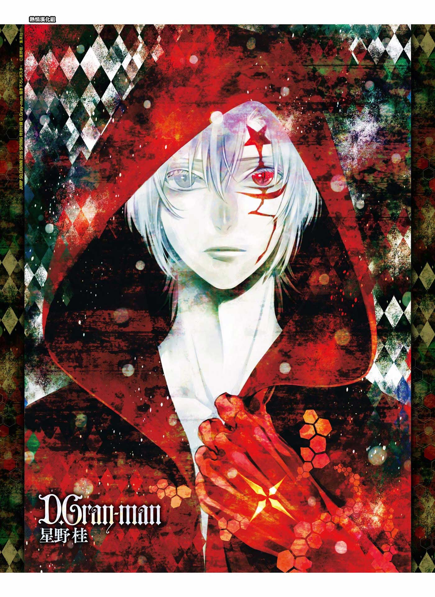

Allen Walker é o protagonista de D.Gray-man, um jovem Exorcista que luta contra os Akuma. Possui um braço esquerdo amaldiçoado e a habilidade de perceber a verdadeira essência dos Akuma. Determinado e gentil, Allen busca salvar as pessoas mesmo enfrentando grandes sacrifícios.
Pontos Fortes
Pontos Fracos